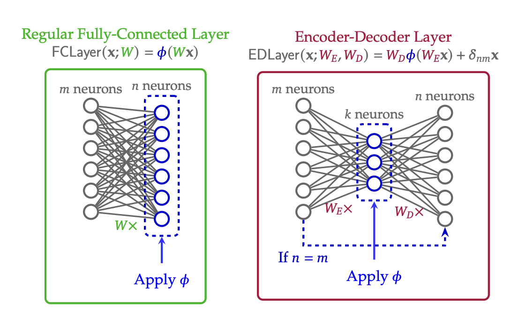

Bionetta: Efficient Client-Side Zero-Knowledge Machine Learning Proving. Technical Report
Preprint published on arXiv, in review
[arXiv]
Unforgettable Fuzzy Extractor: Practical Construction and Security Model
Preprint published on ePrint
[ePrint]


Identifiable Yet Recognizable: Image Distortion with Preserved Embeddings
Published in Engineering Applications of AI (Elsevier) and ICAISC (Springer)


Deep learning-based biometric cryptographic key generation with post-quantum security
Published in Multimedia Tools and Applications (Springer) and PIC S&T (IEEE)